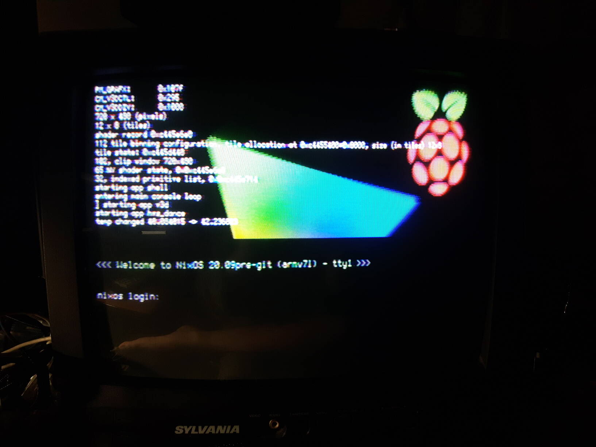

Welcome to librerpi!
librerpi is a FOSS boot firmware based on littlekernel for Raspberry Pi boards, it replaces the proprietary boot firmware normally used to boot.
Website still incomplete
This website is still very much incomplete, so contributions to it are very much welcome. We especially need more documentation about how RPi boards work as well as moving notes in the main lk-overlay repo to the website.
If you see dead links or any other issue, feel free to report them too.
Videos showing librerpi
- 2D and 3D demo
- librerpi booting NixOS with a 2D/3D demo
- 13 sprites bouncing around
- HVS scaling animation
- Screensaving simulator with image loading
- Multiple RaspberryPi logos bouncing around
- Multiple RaspberryPi logos bouncing around, v2
Contact
Most of us are on Libera.Chat IRC and it's the recommended way to chat:
- Network:
irc.libera.chat - Port: 6667 (plain) or 6697 (TLS)
##raspberrypi-internals
If you want, you can also join on Matrix:
- Address:
#rpi-open-firmware-general-chat:matrix.org
Or if willing to chat on discord, you can follow this invite link: https://discord.gg/FTDc9TWUQF
Both 3 chats are bridged together so you can talk to us regardless of which chat you're actually in (we use matterbridge to handle the bridging).
What works
| Feature | RPi 1 | RPi 2 | RPi 3 | RPi 4 | Notes |
|---|---|---|---|---|---|
| Composite NTSC video | Works | Works | Works | Untested | |
| DSI video | Broken | Broken | Broken | Broken | |
| HDMI video | Broken | Broken | Broken | Broken | |
| DPI video | Works | Works | Works | Untested | Partially tested |
| V3D | Partial | Partial | Partial | Untested | |
| 2D composition | Works | Works | Works | Untested | Under firmware control |
| CSI | Untested | Untested | Untested | Untested | |
| I2C host | Untested | Works | Works | Untested | Under linux |
| SPI | Untested | Untested | Untested | Untested | |
| ISP | Broken | Broken | Broken | Broken | Lacks code |
| Video decoding acceleration | Broken | Broken | Broken | Broken | Lacks code |
| PWM audio | Broken | Broken | Broken | Broken | Lacks code |
| Booting Linux | Untested | Works | Untested | Untested | RPi 2: only one core available to linux when using app/linux-bootloader |
| Ethernet (including MAC address from RPi serial number) | Untested | Works | Untested | Untested | |
| USB host | Untested | Works | Untested | Untested | Under Linux |
| SD/MicroSD | Untested | Works | Untested | Untested | Works 95% of the time |